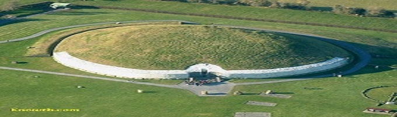

Welcome To Your Website
Click on the images below to reveal more about these sites

Newgrange
Newgrange was constructed over 5,000 years ago (about 3,200 B.C.), making it older than Stonehenge in England and the Great Pyramid of Giza in Egypt. Newgrange was built during the Neolithic or New Stone Age by a farming community that prospered on the rich lands of the Boyne Valley. Knowth and Dowth are similar mounds that together with Newgrange have been designated a World Heritage Site by UNESCO.Giant's Causeway
(known as Clochán an Aifir or Clochán na bhFomhórach in Irish[1] and tha Giant's Causey in Ulster-Scots)[2] is an area of about 40,000 interlocking basalt columns, the result of an ancient volcanic eruption.It is located in County Antrim on the northeast coast of Northern Ireland, about three miles (4.8 km) northeast of the town of Bushmills. It was declared a World Heritage Site by UNESCO in 1986, and a National Nature Reserve in 1987 by the Department of the Environment for Northern Ireland. In a 2005 poll of Radio Times readers, the Giant's Causeway was named as the fourth greatest natural wonder in the United Kingdom.[3] The tops of the columns form stepping stones that lead from the cliff foot and disappear under the sea. Most of the columns are hexagonal, although there are also some with four, five, seven or eight sides. The tallest are about 12 metres (39 ft) high, and the solidified lava in the cliffs is 28 metres thick in places.
Cliffs of Moher
(Irish: Aillte an Mhothair)[1] are located at the southwestern edge of the Burren region in County Clare, Ireland.[2] They rise 120 metres (390 ft) above the Atlantic Ocean at Hag's Head, and reach their maximum height of 214 metres (702 ft) just north of O'Brien's Tower, eight kilometres to the north.[3] The cliffs receive almost one million visitors a year.[3]O'Brien's Tower is a round stone tower near the midpoint of the cliffs built in 1835 by Sir Cornelius O'Brien to impress female visitors.[2] From the cliffs and from atop the watchtower, visitors can see the Aran Islands in Galway Bay, the Maumturks and Twelve Pins mountain ranges to the north in County Galway, and Loop Head to the south